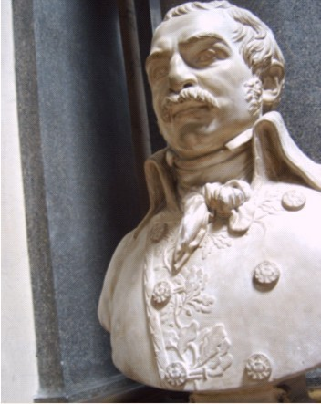
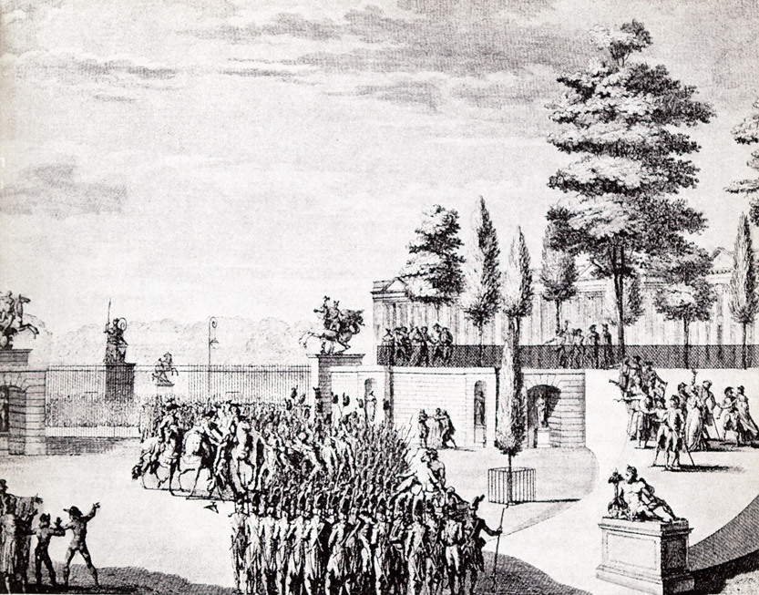
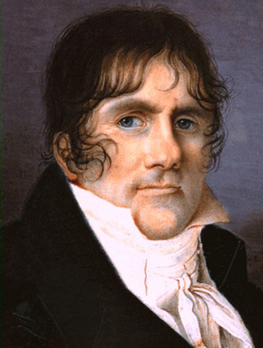
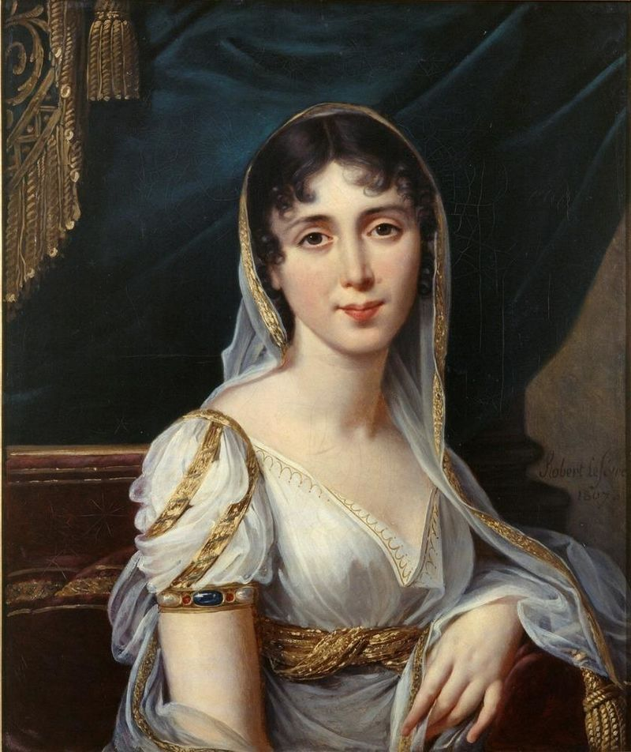
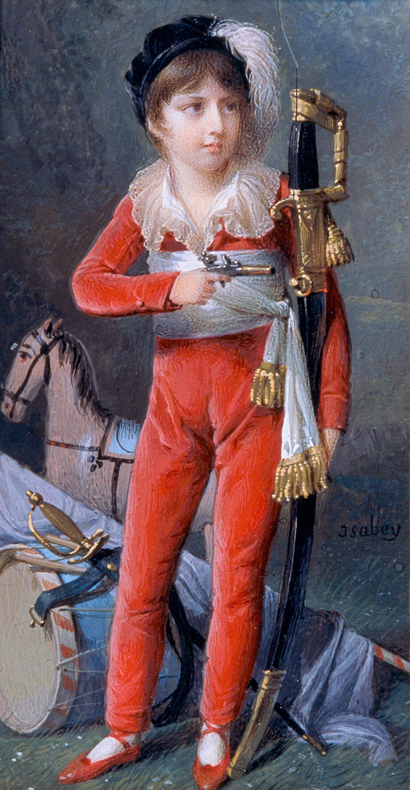
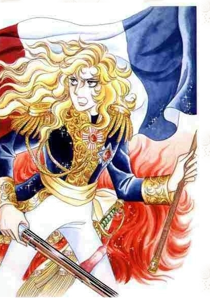

스톡홀름의 프랑스 왕 (4편) - 오스칼이라는 이름
게시: 2018-07-23T06:30:00+09:00
비록 임무가 보충병력의 인솔이라고는 해도, 한겨울에 알프스를 넘어 이탈리아에 들어온다는 것 자체는 꽤 힘든 일이었습니다. 베르나도트의 뛰어난 지휘력이 아니었다면 신병들로 구성된 이 보충병력에서는 아마 탈영이나 부상 등으로 인해 많은 비전투 손실이 있었을 것입니다. 이렇게 힘들게 이탈리아로 들어온 베르나도트가 향한 곳은 롬바르디아의 주도인 밀라노(Milan)였는데, 여기서 나폴레옹과의 악연이 시작됩니다. 당시 밀라노 주둔 프랑스군 지휘관은 뒤퓌(Dominique Martin Dupuy) 장군이었는데, 당시 나폴레옹이 이끄는 이탈리아 방면군 전체는 기타 방면군의 졸전과 대비된 자신들의 연전연승으로 인해 정말 기고만장한 상태였습니다. 그건 뒤퓌 장군도 마찬가지였고, 풋내기들로 이루어진 보충병들을 끌고 겨울 행군을 강행하느라 초라한 행색을 하고 나타난 베르나도트를 대하는 태도가 매우 불손했던 모양입니다.

(뒤퓌 장군의 흉상입니다. 1798년 10월 카이로 폭동 때 가장 먼저 살해된 사람들 중 하나입니다.)
그러나 베르나도트는 벼락 출세한 얼치기 정치 장군이 아니었습니다. 차가운 엘리트였던 그는 명령 불복종 죄목으로 현장에서 뒤퓌 장군을 체포해버리고 말았습니다. 뒤퓌로서는 깜짝 놀랄 일이기도 했으나 몹시 분한 일이기도 했을 것입니다. 뒤퓌가 그렇게 건방진 태도를 취할 수 있었던 것은 그도 믿는 빽이 있기 때문이었는데, 바로 나폴레옹의 최측근인 참모장 베르티에(Louis-Alexandre Berthier)가 그와 매우 가까운 사이였던 것입니다. 사람과의 관계에서는 첫인상이 매우 중요하다고 하는데, 이로 인해 베르나도트는 바그람 전투 때까지 향후 12년 간 두고두고 베르티에의 견제와 방해를 받게 됩니다.
베르나도트가 나폴레옹을 직접 만난 것은 만토바(Mantua)였습니다. 나폴레옹은 베르나도트를 면접해보고는 소장이라는 그의 지위에 맞게 사단 하나의 지휘를 맡겼는데, 이미 리볼리(Rivoli) 전투 등 주요 전투는 다 정리가 된 상태였지만 이탈리아 북동부인 프리울리(Friuli) 침공 등에서 베르나도트는 선봉장으로서 훌륭히 임무를 수행했습니다. 하지만 베르나도트는 결국 나폴레옹과 대립각을 세우는 입장이었습니다. 그 해 9월, 총재 정부의 친위 쿠데타였던 프릭튀도르(Fructidor) 사건이 벌어지자 그에 협조하는 입장이었던 나폴레옹은 휘하 사단장들에게 이 쿠데타를 지지한다는 성명서를 발표하도록 지시했는데, 베르나도트는 전혀 상반된 내용의 성명서를, 그것도 나폴레옹이 아니라 파리의 총재 정부로 곧장 보내버렸던 것입니다. 이로써 나폴레옹과 베르나도트의 관계는 사실상 돌이킬 수 없는 것이 되어버리고 말았습니다.

(프릭튀도르 쿠데타는 왕당파가 세력을 잡아가던 의회에 대해 1797년 총재 정부가 일으킨 친위 쿠데타입니다. 이 사건에는 나폴레옹이 총재 정부에게 파견해준 나폴레옹의 원투 펀치 중 한명인 오쥬로 장군도 활약했습니다.)
나폴레옹은 곧 행동에 나섰습니다. 10월에 캄포 포르미오(Campo Formio) 조약으로 오스트리아와의 전쟁이 종료되자, 나폴레옹은 곧 베르나도트를 프랑스 본국으로 전출시켜버렸습니다. 하지만 베르나도트도 만만치 않았습니다. 그가 애초에 나폴레옹에게 뻣뻣하게 나올 수 있었던 것은 총재 정부의 당시 제1인자였던 폴 바라스(Paul Barras)의 지지를 받고 있기 때문이었습니다. 바라스도 비록 자신이 키워준 인물이긴 하지만 나폴레옹의 인기와 권력이 자신을 넘어선다고 느끼자 불안을 느꼈고, 나폴레옹을 누를 경쟁자로 베르나도트를 주시하고 있었습니다. 베르나도트가 나폴레옹으로부터 물을 먹고 파리로 돌아오자, 바라스는 오히려 그를 나폴레옹을 대체하여 이탈리아 방면군 사령관으로 임명하려 했습니다. 그러나 상대는 나폴레옹이었습니다. 이미 외무장관 탈레랑(Charles Maurice de Talleyrand-Périgord)을 포섭해놓은 나폴레옹은 선수를 쳐서, 바라스의 의도와는 반대로 베르나도트를 캄포 포르미오 조약으로 인해 새로 신설된 빈(Wien) 주재 오스트리아 대사로 발령 내버렸습니다. 권력 싸움에서 나폴레옹에게 패배를 거듭한 베르나도트는 분한 마음을 안고 빈으로 향했는데, 그나마 거기서도 오래 있지는 못했습니다. 빈 대사관에 자랑스럽게 혁명의 상징이자 국기인 삼색기를 게양했는데, 최근의 패배로 인한 상처가 아물지 않은 오스트리아인들의 심기를 건드려 소요가 일어난 것입니다. 이로 인해 베르나도트는 결국 파리로 되돌아와 실업자 대열에 동참해야 했습니다.

(부패하고 무능한 총재 정부의 상징인 폴 바라스입니다. 그런 그도 젊은 시절 귀족 출신의 군 장교 후보생으로 프랑스령 인도로 가는 길에 난파를 당해 죽을 뻔 하는 등 꽤 활발한 활동을 했습니다. 총재 정부 시절 부정한 방법으로 많은 돈을 긁어모은 그는 나폴레옹에 의해 가택 연금 상태에 놓이거나 로마 등지로 정치적 추방을 당한 상태에서 아주 호화롭게 살았고, 결국 1829년 파리의 사이요(Chailllot, 에펠탑 앞에 있는 그 궁전 맞습니다)에서 잘 먹고 잘 살다 죽었습니다.)
하지만 베르나도트에게는 나폴레옹과 만난 1797년이 삼재가 꼈던 마지막 해였나 봅니다. 다음해인 1798년 베르나도트에게는 그의 인생에 있어 매우 중요한 역할을 했던 귀인을 만나게 됩니다. 바로 데지레 클라리(Eugénie Bernardine Désirée Clary)였습니다. 데지레 클라리는 원래 나폴레옹과 약혼을 했던 여자였는데, 이 둘이 결혼을 한 것은 어느 한 측의 정략적인 의도라기 보다는 그냥 하다보니 그렇게 된 것으로 보입니다. 애초에 데지레가 처음 만났던 것은 나폴레옹이 아니라 그의 형 조제프 보나파르트였습니다. 원래 그녀의 집안은 부유한 비단 상인이었는데, 서슬퍼런 대혁명 초기에 그녀의 남동생이 반혁명분자로 몰려 체포된 일이 있었습니다. 그녀는 남동생을 구하고자 이리저리 줄을 댔는데, 그러다 만난 것이 조제프였습니다. 그러나 조제프는 그녀보다는 그녀의 언니였던 줄리 클라리에게 끌렸고, 결국 조제프와 줄리가 결혼을 합니다. 대신 이러면서 나폴레옹과 데지레가 만나게 되었고, 이 둘도 1795년 약혼을 했지요. 그러나 하필 약혼을 하자마자 나폴레옹은 운명의 여인을 또 만납니다. 바로 조세핀이었지요. 정열의 크레올 여인에게 얌전한 데지레는 상대가 되지 못했고 나폴레옹은 불과 5개월만에 데지레와 파혼을 선언합니다. 생각해보면 데지레는 주로 나이 많은 여자들에게 밀리는 스타일이었나 봅니다.

(비교적 젊은 시절인 1807년의 데지레 클라리입니다. 대단한 미인으로 보이지는 않네요.)
나폴레옹은 변치않는 사랑을 간직하는 순정파 남자는 아닐지 몰라도 의리와 체면을 중요시하는 지중해 남자였습니다. 그는 자신이 파혼한 데지레에게 빚을 지고 있다고 늘 생각했습니다. 그래서 데지레에게 좋은 남편감을 소개해주려고 노력을 하는 편이었는데, 그 결과 중 하나가 뒤포(Mathurin-Léonard Duphot) 장군과의 약혼이었습니다. 뒤포는 사실 좋은 남편감은 아니었습니다. 이미 다른 여자와 눈이 맞아 애까지 둔 사람이었거든요. 그러나 부잣집 딸 데지레에게는 두둑한 지참금이 있었고 특히 나폴레옹과 동서가 된다는 점은 매우 탐나는 결혼 조건이었기 때문에 뒤포는 그 약혼에 응한 것이었습니다. 하지만 뒤포는 1797년 12월, 결혼식 전날 밤에 로마에서 일어난 반프랑스 폭동에 휘말려 살해되고 말았습니다. 정말 남자 복이 없는 여자라고 할 수 있었지요.
일이 이렇게 되자 나폴레옹은 더더욱 데지레에게 미안함을 느낄 수 밖에 없었습니다. 특히 데지레는 언니 줄리와 매우 친하게 지냈으므로 보나파르트 집안에서는 거의 식구나 다름없는 사이였습니다. 전해지는 바에 따르면 조세핀을 매우 싫어했던 보나파르트 집안 사람들은 조세핀에 대한 반감 때문에 얌전하고 순진무구한 데지레에게 더욱 친절하게 대했다고 합니다. 이런 식구들 때문에라도 나폴레옹은 데지레에게 빨리 좋은 혼처를 구해줘야 할 판이었습니다. 그러다 나선 것이 나폴레옹의 심복인 폭풍우 쥐노(Jean-Andoche Junot)였습니다. 쥐노도 보나파르트 집안에 자주 들락거리다 데지레에게 반했는지, 아니면 나폴레옹의 인척이 되고 싶다는 욕심 때문에서였는지 데지레에게 청혼을 하기는 했는데, 그만 퇴짜를 맞았습니다. 사실 쥐노는 나폴레옹의 초기 심복이었으나 능력치가 많이 떨어지는 편이라서 나폴레옹도 중용하는 편이 아니었는데다, 그나마 남자답게 하트 모양으로 구성한 촛불 진열 속에서 장미꽃을 들고 청혼한 것이 아니라 마르몽(Auguste de Marmont)을 통해서 '저 말이죠, 쥐노가 그러는데 댁과 결혼하고 싶답니다'라고 청혼을 했기 때문이었답니다. 아무래도 쥐노에겐 여러 모로 문제가 있긴 있었던 것 같습니다.
그런 상황에서 데지레를 만나 결혼에 성공한 것은 바로 베르나도트였습니다. 생각해보면 베르나도트야말로 데지레에게 있어 최고의 배우자였습니다. 베르나도트도 데지레처럼 부르조아 집안 출신이었고, 지위 뿐만 아니라 교양도 풍부했을 뿐만 아니라, 결정적으로 젊은 시절 별명이 '각선미 하사'(Sergeant Belle-Jambe)일 정도로 외모도 준수한 편이었거든요. 게다가 베르나도트와 나폴레옹 두 사람은 서로 화해를 해야 하는 관계였습니다. 화해를 하는데 있어 가장 좋은 것은 결혼을 통해 인척이 되는 것이었지요. 나폴레옹이 이집트 원정을 떠난 직후인 1798년 8월 이 두사람은 모든 사람들의 축복 속에서 결혼식을 올렸고, 바로 다음해 외아들 오스카(Joseph François Oscar Bernadotte)를 낳게 됩니다. 베르나도트의 외아들의 이름이 정해진 과정만 봐도 베르나도트 가족과 보나파르트 가족의 복잡한 관계가 그대로 드러납니다. 앞서 말했듯이 언니 줄리와의 사이가 돈독했던 데지레는 애초에 이 아이의 이름을 형부의 이름을 따서 조제프라고 지었습니다. 그러나 데지레의 부탁으로 이 아이의 대부가 된 나폴레옹은 이 아이의 이름으로 자신이 읽던 아일랜드의 음유시인 오시앙(Ossian)의 영웅 서사시 주인공들 중 하나인 프랑수와 오스카(François Oscar)로 정하자고 했고, 그 이름도 그대로 붙여졌습니다. 그래서 이 아이는 그렇게 긴 이름을 갖게 된 것입니다. 이 아이가 나중에 스웨덴 국왕 오스카 1세(Oscar I)가 되리라고는 이때까지만 해도 아무도 상상 못했을 것입니다.

(어린 시절 중무장(?)한 오스카 베르나도트입니다. 베르나도트가 스웨덴 왕세자로 책봉되기 몇 년 전에 그려진 그림이라고 하니까 대략 7~8세 정도에 그려진 그림 아닐까 합니다.)

(우연인지 필연인지 베르사이유의 장미가 자주 등장하네요. 오스칼이라는 이름은 Oscar를 일본식으로 표기하다보니 잘못 발음되어 전해지는 이름이고, 이 남장 여걸의 이름은 Oscar François de Jarjayes, 즉 오스카 프랑수와 드 자르제입니다. 참고로 오스카라는 이름의 어원은 아일랜드 계통으로서, '사슴을 사랑하는'이라는 뜻이라고도 하고, 영어 고어로서 '신의 창'이라는 뜻이라고도 합니다. 희한하게도 이 이름은 스웨덴에서 남자 이름으로 3번째로 많이 쓰이는 이름입니다.)
이로써 베르나도트와 나폴레옹의 화해는 완성되었고, 나폴레옹은 향후 그의 야심을 이루는데 베르나도트의 도움을 받을 수 있을 것이라 생각했습니다. 그러나 그건 베르나도트라는 남자를 잘 이해하지 못한 것이었습니다.
Source : The Life of Napoleon Bonaparte by William M. Sloane
https://en.wikipedia.org/wiki/Coup_of_18_Fructidor
https://en.wikipedia.org/wiki/Charles_XIII_of_Sweden
https://en.wikipedia.org/wiki/Oscar_I_of_Sweden
https://en.wikipedia.org/wiki/D%C3%A9sir%C3%A9e_Clary
https://en.wikipedia.org/wiki/Oscar_(given_name)